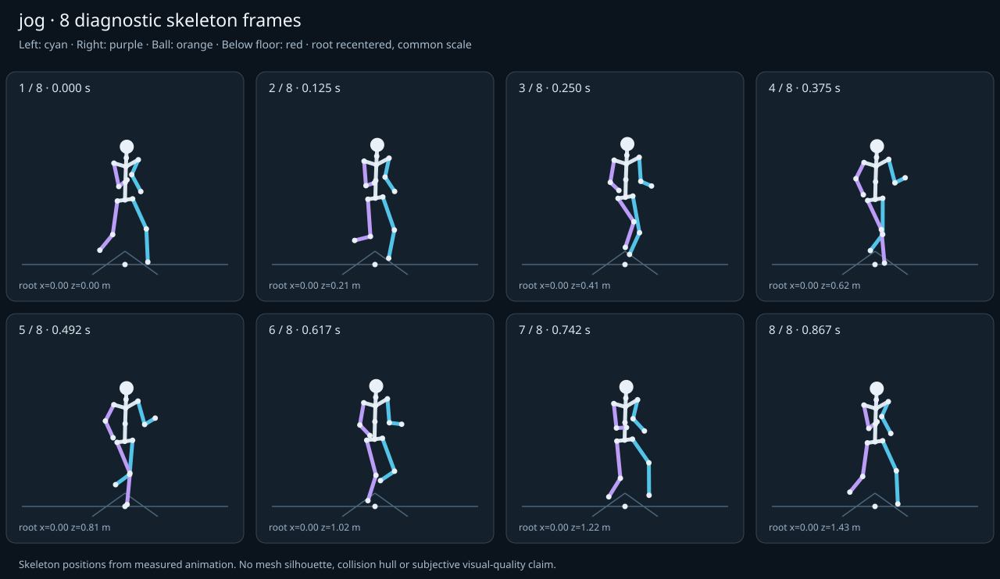

כל הקליפים · תצוגת התנועה · JSON מקורי
ציון 90.4 · כיסוי 100%
נתוני motion-qa-v1 המקוריים; עיצוב הדוח בלבד הותאם לחבילה. נקודות הסוליה נמדדות בתרחיש שחקן חיצוני מוצהר; Root בנכס נשאר קבוע.

| מדד | מצב | ערך | ציון | ראיות |
|---|---|---|---|---|
| החלקת רגליים | ירוק | 0.000089 | 99.82 | ראיות המדידה{
"coordinateSpace": "native GLB plus explicitly declared external actor position and heading, applied once",
"supportSource": "declared",
"windows": 2,
"samples": 98,
"maxDriftMeters": 0.00015,
"p95SpeedMetersPerSecond": 0.009559,
"worst": {
"bone": "RightFoot",
"t": 0.816667,
"start": 0.433333,
"end": 0.832,
"driftMeters": 0.00015
}
} |
| חדירה לרצפה | ירוק | 0 | 100 | ראיות המדידה{
"samples": 2140,
"floorY": 0,
"probeKind": "declared sole probes plus skeletal joint centers (no mesh surfaces)",
"maxDepthMeters": 0,
"worst": {
"t": 0,
"bone": "LeftFoot",
"depthMeters": 0,
"y": 0.004
}
} |
| קפיצות פוזה | צהוב | 1.010459 | 79.79 | ראיות המדידה{
"adjacentPairs": 106,
"observations": 1802,
"maxDegrees60Hz": 8.996185,
"maxMarkerStepHeight60Hz": 0.040418,
"maxRootStepHeight60Hz": 0.016272,
"worst": {
"ratio": 1.0104593678104292,
"t": 0.233333,
"previousTime": 0.225,
"bone": "RightFoot",
"markerStepHeight60Hz": 0.040418,
"degrees60Hz": 3.783647
}
} |
| חריגות אנטומיות | ירוק | 0 | 100 | ראיות המדידה{
"testedFrames": 107,
"affectedFrames": 0,
"checks": 1819,
"maxLimbFlexionDegrees": 102.966103,
"maxRelativeSegmentLengthChange": 0,
"hingeDirectionChecked": true,
"axialTwistChecked": false,
"violations": []
} |
| מגע בכדור | לא חל | — | — | ראיות המדידה{} |
| כניסה ויציאה מול המתנה | צהוב | 2.815928 | 52.76 | ראיות המדידה{
"entry": {
"ratio": 2.8159282188333146,
"t": 0,
"idleTime": 3.9,
"markers": 17,
"rmsPositionHeight": 0.112637,
"rmsRotationDegrees": 32.2684,
"rmsVelocityHeightPerSecond": 0.295902,
"velocityEvaluated": true
},
"exit": {
"ratio": 2.815928203353272,
"t": 0.866667,
"idleTime": 3.9,
"markers": 17,
"rmsPositionHeight": 0.112637,
"rmsRotationDegrees": 32.2684,
"rmsVelocityHeightPerSecond": 0.378085,
"velocityEvaluated": true
},
"worstEndpoint": "entry",
"alignment": "horizontal root translation; raw asset poses used when provided"
} |
| מהירות גוף מול צעדים | ירוק | 0.000022 | 100 | ראיות המדידה{
"rootSource": "sampled presented root",
"rootSpeedMetersPerSecond": 1.65,
"observedRootSpeedMetersPerSecond": 1.65,
"referenceRootSpeedMetersPerSecond": 1.65,
"supportSource": "declared",
"backwardSweepSpeedMetersPerSecond": 1.650036,
"cadenceStepsPerSecond": 2.307692,
"impliedStrideMeters": 1.430031,
"rootStrideMeters": 1.43,
"supportSweeps": [
{
"bone": "LeftFoot",
"start": 0,
"end": 0.398667,
"duration": 0.398667,
"sweepMeters": 0.657814,
"speedMetersPerSecond": 1.650036
},
{
"bone": "RightFoot",
"start": 0.433333,
"end": 0.832,
"duration": 0.398667,
"sweepMeters": 0.657814,
"speedMetersPerSecond": 1.650036
}
]
} |
| סימטריה | ירוק | 0 | 100 | ראיות המדידה{
"mode": "gait",
"modeSource": "declared",
"structuralMismatch": 0,
"segments": [
{
"segment": "Arm-ForeArm",
"mismatch": 0
},
{
"segment": "ForeArm-Hand",
"mismatch": 0
},
{
"segment": "UpLeg-Leg",
"mismatch": 0
},
{
"segment": "Leg-Foot",
"mismatch": 0
}
],
"motionRmsHeight": 0,
"worstMotion": {
"t": 0.7,
"errorHeight": 0
},
"bilateralPoseRmsHeightUnscored": 0.17646,
"note": "Motion is mirrored in a pelvis-centred body basis."
} |